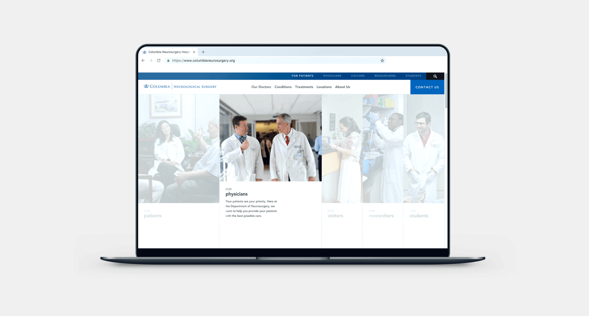

Description
The Department of Neurological Surgery of Columbia University approached Night Owls to create a website that allowed for a personalized experience for every visitor, despite the varying demographics. The challenge was to organize the vast depth of information in Columbia University’s database and structure it in a consumable manner.
